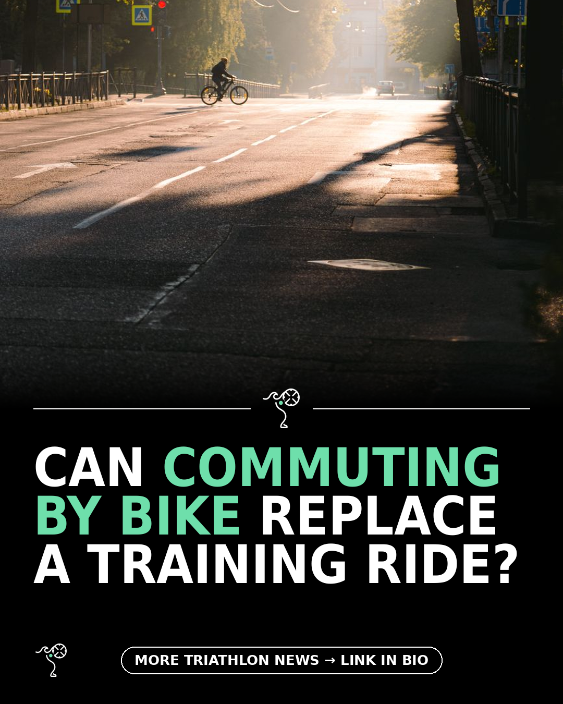

Triathlon News Daily
Saturday, 17 October 2026 · generated automatically

Today's stories
- What happens when you cycle every single day220 Triathlon
- COROS Pace 4 Pro reviewed: is the upsell worth itDC Rainmaker
- Fitbit kills the Charge line and launches the EdgeDC Rainmaker
- 17 No-Bake Christmas Treats (Easy Holiday Desserts Without the Oven!)Marathons & Motivation